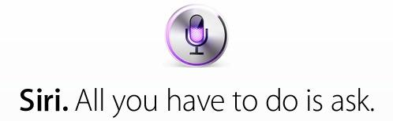
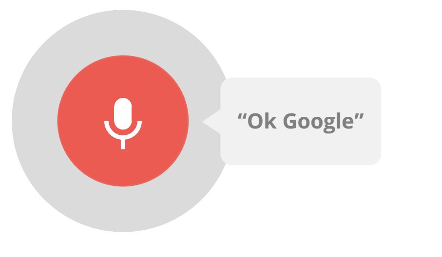
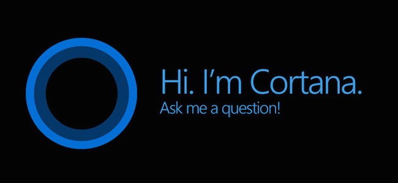
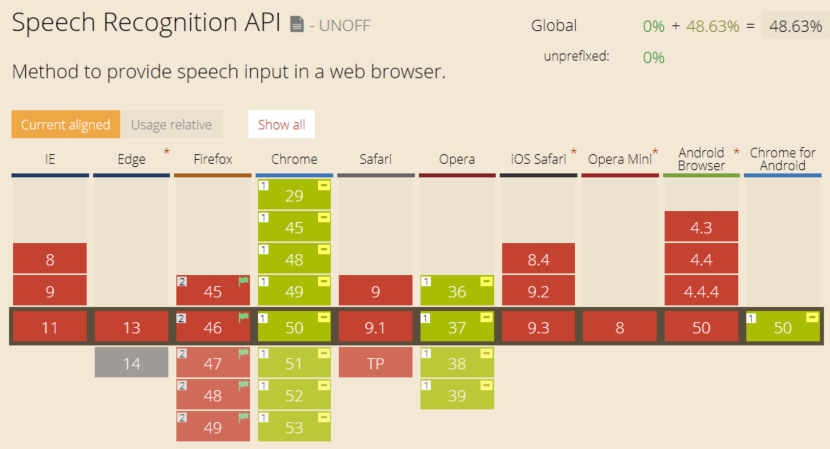
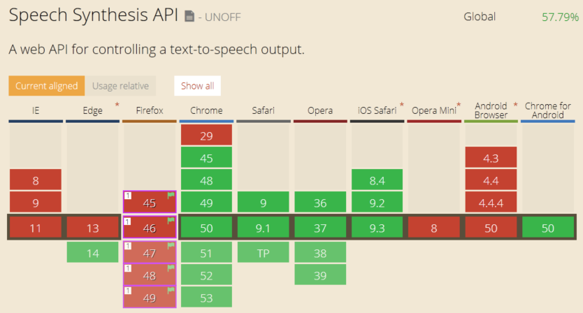
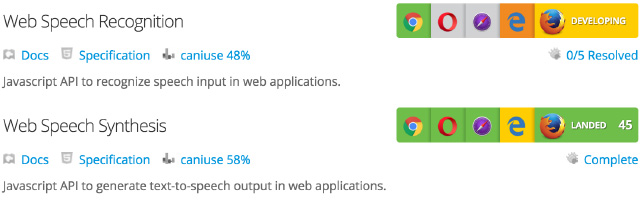

Web Speech API as a way to communicate with website
Web Speech API as a way to communicate with website
Agenda
Web Speech API as a way to communicate with website
Agenda
Web Speech API as a way to communicate with website
Agenda
- Speech Milestones
- Web Speech API - what kind of a monster?
Web Speech API as a way to communicate with website
Agenda
- Speech Milestones
- Web Speech API - what kind of a monster?
- Browsers support
Web Speech API as a way to communicate with website
Agenda
- Speech Milestones
- Web Speech API - what kind of a monster?
- Browsers support
- Speech Synthesis
Web Speech API as a way to communicate with website
Agenda
- Speech Milestones
- Web Speech API - what kind of a monster?
- Browsers support
- Speech Synthesis
- Examples
Speech Milestones
There are many peoples uses Apple's Siri, Google Now, Amazon's Alexa or Microsoft's Cortana today in there life. But all this applications don't relate to web browser/applications. One way to communicate with your webpage is The Web Speech API. Thereby yon can give commands what to do (Speech Recognition) or listen what has written (Speech Synthesis).
Opportunities
- Hands Free
- Extra Hands
- Shortcuts
Opportunities
- Hands Free
- Extra Hands
- Shortcuts
- Humaneness
Humaneness

Apple's Siri

- Both Speech Recognition and Syntesis
- Since iOS 5
- "Hey, Siri"
Google Now

- Speech Recognition: Google Search
- Since Jelly Bean (Android 4.1)
- "OK, Google"
Microsoft's Cortana

- Speech Recognition: Search bar
- Since WP 8.1, Win10, XBOX
- Chit Chat - human like dialogue
- "Hey, Cortana"
Amazon Alexa
- Speech Recognition: voice commands
- Since 2014
- Intro video - Echo
- "Alexa", "Amazon" or "Echo"
Browser Support: Speech Recognition API

Browser Support: Speech Syntesis API

Mozilla Firefox

Disabled by default. Can be enabled via the media.webspeech.synth.enabled and media.webspeech.recognition.enable flags in about:config.
Speech Syntesis
Speech synthesis is the artificial production of human speech (Wikipedia).
Speech Syntesis: Utterance
Interface: SpeechSyntesisUtterance. It has properties:
- pitch — from 0 (lowest) to 2 (highest)
- rate — from 0.1 (lowest) to 10 (highest)
- volume — from 0 (lowest) to 1 (highest)
- voice — SpeechSynthesisVoice object
- text
- lang
Speech Syntesis: Utterance Events
- onboundary — Fired when the utterance reaches a sentence boundary.
- onstart — … has begun to be spoken.
- onpause — … is paused part way through.
- onresume — … paused utterance is resumed
- onend — … has finished being spoken
- onerror
- onmark
Speech Syntesis: Properties
Read only: a Boolean
Speech Syntesis: Methods
Read only: a Boolean
- Cancel()
- getVoices()
- pause() / resume()
- speak()
Example #1
const copy = new SpeechSynthesisUtterance();
copy.text = "Excellence in Software Engineering!";
speechSynthesis.speak(copy);
Demo: jsFiddle
Speech Syntesis: Voices
The SpeechSynthesisVoice interface represents a voice that the system supports. All properties are Read only:
- default
- lang
- localService
- name
- voiceURI
Example #2
let voices = webkitSpeechSynthesis.getVoices();
var utter = new webkitSpeechSynthesisUtterance(input.value);
utter.voice = voices[selectedOption];
webkitspeechSynthesis.speak(utter);
Demo: jsFiddle
Speech Synthesis Markup Language (SSML)
SSML is an XML-based markup language for speech synthesis applications (Wikipedia. It includes markup for:
- pitch
- rate
- duration
- volume
SSML to Create Prompts
<speak version="1.0"
xmlns="http://www.w3.org/2001/10/synthesis"
xml:lang="en-US">
<prosody pitch="low">Low pitch.</prosody>
<prosody rate="1">Medium speech.</prosody>
<prosody volume="x-loud">extra loud volume.</prosody>
</speak>
https://msdn.microsoft.com/en-us/library/jj127898.aspx
Speech Synthesis: Recap
Adding synthesized speech to your web application is a great plan to improve accessibility. Do not ignore it inspite of bad browser support.
Speech Recognition
Speech Recognition is an interface, which provides the ability to recognize voice context from an audio input (normally via the device's default speech recognition service) and respond appropriately.
Speech Recognition: Properties
- grammars — custom language rules that will be understood by the current SpeechRecognition.
- lang
- continuous — results are returned for each recognition or only a single result
- interimResults — results that are not yet final
- maxAlternatives
- serviceURI — service used by the current SpeechRecognition to handle the actual recognition
Speech Recognition: Methods
- abort() — stops the speech recognition service from listening to incoming audio and doesn't attempt to return a SpeechRecognitionResult
- stop() — … and attempts to return a SpeechRecognitionResult using the audio captured so far.
- start() — Starts the speech recognition service listening to incoming audio with intent to recognize grammars
Speech Recognition: Events (1)
- onstart
- onend
- onerror
- onresult
Speech Recognition: Events (2)
- onaudiostart
- onsoundstart
- onspeechstart
- onaudioend
- onsoundend
- onspeechend
- onnomatch — service returns a final result with no significant recognition
SpeechRecognitionResult
The SpeechRecognitionResult represents a single recognition match, which may contain multiple SpeechRecognitionAlternative objects.
- isFinal
- length
- SpeechRecognitionAlternative:
- confidence
- transcript — final result
Example #3
let recognition = new webkitSpeechRecognition();
recognition.lang = 'en-US';
recognition.interimResults = false;
recognition.maxAlternatives = 1;
recognition.onresult = function(event) {
alert(event.results[0][0].transcript);
}
Demo: jsFiddle
Speech Recognition: Grammars
Grammar is defined using JSpeech Grammar Format (JSGF). Other formats may also be supported in the future.
When language rules are useful:
- filters results;
- customize vocabulary;
- limits vocabulary.
Grammar List
const grammar = '#JSGF V1.0; grammar colors;
public <color> = aqua | azure | beige | bisque
| sienna | silver | snow | tan | teal';
let speechRecognitionList = new webkitSpeechGrammarList();
speechRecognitionList.addFromString(grammar, 1);
recognition.grammars = speechRecognitionList;
Why?
- The Web Speech API awfully supported by browsers.
- There are many redundunt effort for creating maintain and expand life project.
Workaround
- Web Audio API
- JavaScript in browser (Pocketsphinx.js)
- HTTP API proxied through server (IBM Watson)
- …
PocketSphinx.js: Speech Recognition in JavaScript
PocketSphinx.js is a speech recognizer that runs entirely in the web browser. It is built on:
- a speech recognizer written in C (PocketSphinx) converted into JavaScript using Emscripten;
- an audio recorder using the web audio API.
Demo: https://syl22-00.github.io/pocketsphinx.js/
IBM Watson Developer Cloud
IBM Watson is a technology platform that uses natural language processing and machine learning to reveal insights from large amounts of unstructured data.
Youtube video preview: https://epa.ms/OHWyt
IBM Watson: Services
- Text to Speech — service understands text and natural language to generate synthesized audio output complete with appropriate rhythm and intonation (demo).
- Speech to Text — service uses speech recognition capabilities to convert speech into text (demo).
Summary
- Accessibility is important.
- Speech Interfaces are the future.
When speaker on the conference asked the question on the subject about which he has spoken and he does not know the right answer.

So… Obviously, the answer to this question
should be in the documentation.
Web Speech API